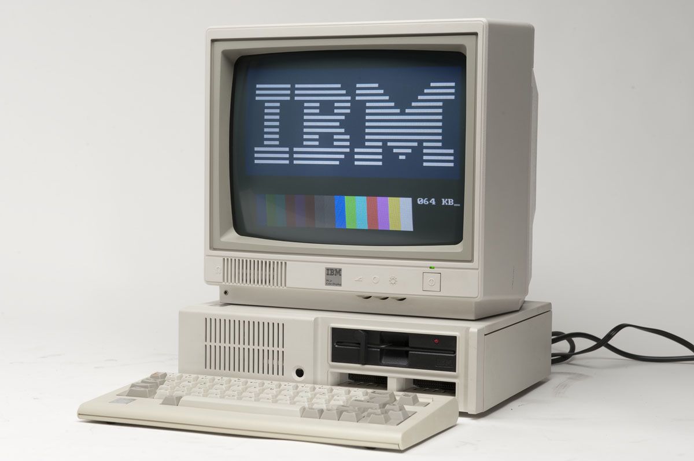

★Cuarta generación (1972-1980) ★
Fase caracterizada por la integración sobre los componentes electrónicos, lo que propició la aparición del microprocesador un único circuito integrado en el que se reúnen los elementos básicos de la máquina. Se desarrolló el "chip".
Se colocan más circuitos dentro de un "chip".Cada "chip" puede hacer diferentes tareas. Un "chip" sencillo actualmente contiene la unidad de control y la unidad de aritmética/lógica. El tercer componente, la memoria primaria, es operado por otros "chips".Se reemplaza la memoria de anillos magnéticos por la memoria de "chips" de silicio. Se desarrollan las microcomputadoras, o sea, computadoras personales o PC. Se desarrollan las supercomputadoras. La denominada Cuarta Generación (1971 a 1983) es el producto de la micro miniaturización de los circuitos electrónicos. El tamaño reducido del microprocesador de chips hizo posible la creación de las computadoras personales (PC). Hoy en día las tecnologías LSI (Integración a gran escala) y VLSI (Integración a muy gran escala) permiten que cientos de miles de componentes electrónicos se almacenen en un chip. Usando VLSI, un fabricante puede hacer que una computadora pequeña rivalice con una computadora de la primera generación que ocupaba un cuarto completo. Hicieron su gran debut las microcomputadoras.

Dirección: Cl. 71b #29-14
PBX: 3175959760
Email: cristianmoralesoc2002@gmail.com